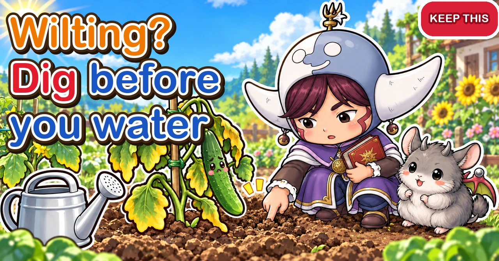
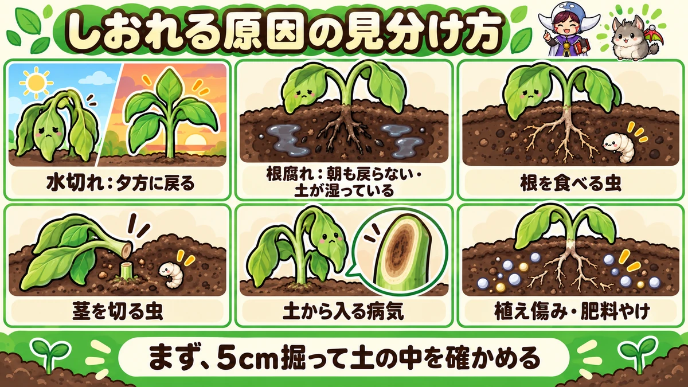
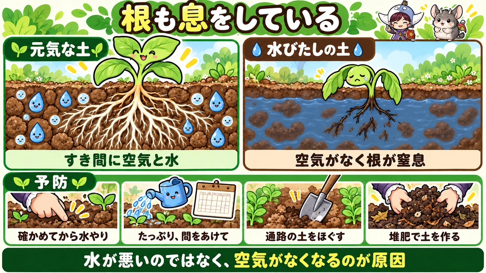
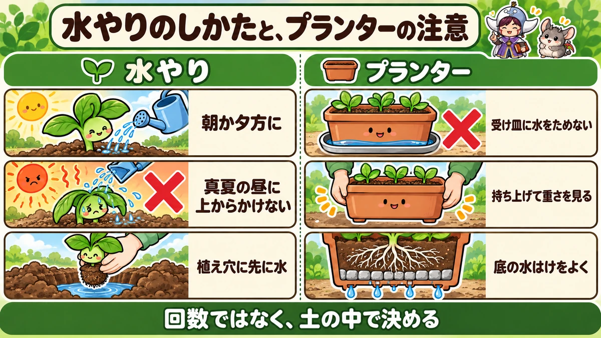

Why vegetables wilt 💧 Dig before you water

💧 "My cucumber was fine yesterday and this morning it's completely limp."
💧 "I watered it well, and it's still wilted the next day."
💧 "The lower leaves of my container tomato keep going yellow and brown and dropping."
Hello, I'm Eiko. Eight years of growing vegetables organically and without pesticides, and a teaching licence in science.
When a plant wilts, it's natural to think "it needs water" and water it some more. But if the real cause is root rot from too much water, every watering makes it worse.
This article covers how to work out why a plant is wilting or dying, how root rot works and how to recognise it, watering and soil habits that prevent it, cautions for containers, and crop-by-crop notes.
Where you are: the six causes here are universal. The grubs that eat roots in Japan are chafer and cucumber-beetle larvae; elsewhere you may also meet vine weevil larvae (especially in containers), wireworms or leatherjackets, and cutworms are the same worldwide. "The rainy season" means Japan's June–July rains; read it as any long wet spell where you are. Seasonal timings are for central Japan.
The essentials: before watering a wilting plant, dig 5 cm (2 in) into the soil a little way from it and feel. Wilts at midday and recovers by evening: thirst. Still wilted in the cool of the morning, with damp soil: suspect the roots. Water thoroughly but only when the soil is dry below the surface; keep summer crops on the dry side until they set fruit; loosen compacted paths after rain; never leave water standing in container saucers.
① Six causes at a glance
1. Thirst
- How it wilts: in the heat of the day, recovering by evening or morning
- Soil: dry and crumbly even 5 cm down
- Roots: white, with no smell
- What to do: water thoroughly in the cool of the morning or evening
2. Root rot
- How it wilts: doesn't recover by morning; lower leaves turn yellow or brown
- Soil: always damp; water soaks in slowly; sometimes mould on the surface
- Roots: brown or blackish, mushy, snapping easily; sometimes a bad smell
- What to do: stop watering and let the soil dry; loosen the soil round the bed
3. Root-eating grubs
- How it wilts: gradually loses vigour, wilting at midday more and more often
- Soil: dig at the base and white grubs turn up
- Roots: eaten away
- What to do: dig round the base and remove the grubs
4. Stem-cutting caterpillars (cutworms)
- How it wilts: a seedling is suddenly lying flat one morning
- Stem: chewed through at ground level
- What to do: scrape the soil nearby and find the caterpillar hiding there
5. Soil-borne disease
- How it wilts: suddenly, while the leaves are still green; sometimes only one side of the plant
- Stem: cut it and the inside may be brown
- What to do: pull the plant and remove it; don't grow the same family there again soon
6. Transplant shock or fertiliser burn
- How it wilts: just after planting, or just after feeding
- Roots: damaged at planting, or burnt by strong fertiliser
- What to do: for transplant shock, shade the plant and go easy on water; for fertiliser burn, water heavily to dilute it (only if the soil is dry)

What this diagram says （図解の文字）
- Telling why a plant is wilting
- "Thirst: recovers by evening" ／ "Root rot: still wilted in the morning, soil damp" ／ "Root-eating grubs"
- "Stem-cutting caterpillars" ／ "Soil-borne disease" ／ "Transplant shock, fertiliser burn"
- "First, dig 5 cm and check the soil"
② Warning signs before it wilts
Small changes often come before a plant collapses. Watch for these on your rounds and you can act early:
- Leaves lose their shine and look dull
- New leaves or vine tips stop growing
- Lower leaves are slowly turning yellow
- The soil stays wet long after watering
- Puddles linger round the plant after rain
- The plant wobbles when you press the base
If you notice any of these, don't wait for wilting: check how damp the soil is and look at the base of the stem.
③ Working out the cause, step by step
Step 1. Note when it wilts
If it droops in the heat of the day but stands up again by evening or the next morning, the roots are still working. Usually it's thirst, or the roots briefly can't keep up in the heat. If it's still wilted in the cool of the morning, the roots themselves are probably damaged.
Step 2. Check the moisture below the surface
The surface tells you nothing about what's underneath. Dig 5 cm (2 in) down a little way from the plant with a finger or trowel. Squeeze a handful: if it holds together, there's enough water; if it crumbles apart, it's dry.
- Dry all the way down → probably thirst
- Damp, or water oozes out → water isn't the problem; suspect root rot or another cause
The surface is often dry while the soil below is damp. Watering by the look of the surface leads to overwatering.
Step 3. Look at the base of the stem
- Chewed through at ground level → cutworms
- Soft, mushy or discoloured at the base → root rot or disease
- Wobbly → roots eaten or rotting
Step 4. Look at the roots
If a plant has died, or you're moving it anyway, pull it and look.
- Lots of thick white roots → healthy roots. The cause may be thirst or heat
- Few roots, brown or black, snapping easily, mushy → root rot
- Roots gnawed away, white grubs nearby → root-eating grubs
- Lots of knobbly swellings → root-knot nematodes, or clubroot in brassicas
Step 5. Think back over the weather and your jobs
- Days of rain, or watering every day → root rot
- A dry spell with no watering → thirst
- Just planted → transplant shock
- Just fed → fertiliser burn
- Watered at midday in high summer → roots scalded by hot water
④ Reading roots
Healthy roots
Healthy roots are whitish and firm. Fine roots branch off thicker ones and grip the soil. Rinse a pulled plant gently and you'll see white roots spread throughout.
Damaged roots
Damaged roots turn brown, grey or black, lose their firmness and snap when pulled. In bad cases only the skin remains, the inside dissolved. If you can hardly find any thick white roots, most of them are damaged.
Checking the roots of a living plant
You can't pull a growing plant to look. Instead, dig gently with a trowel a little way out from it. White new roots mean the roots are working. If the soil is soggy and blackish roots come away in pieces, suspect root rot. Put the soil back gently afterwards.
How far do roots spread?
Roots usually spread sideways about as far as the leaves. Check the soil under the outer edge of the foliage, not just at the stem, to see the conditions the roots are in.
⑤ About root rot
What it is
Root rot is exactly what it sounds like: the roots rot. With the soil constantly saturated, the roots can't breathe, weaken and decay. Rotten roots take up neither water nor nutrients, so the leaves discolour, the whole plant weakens and eventually dies.
Roots breathe too
Leaves make food from light, but roots live on oxygen from the air in the gaps in the soil. Water every day and those gaps stay full of water: the roots are effectively drowning, short of oxygen. Keep it up and they suffocate and rot.
Signs of root rot
- Soil stays wet after watering; water soaks in slowly
- Whitish mould on the soil surface
- The whole plant looks listless
- Lower leaves turn yellow or brown and drop
- The stem loses its firmness and feels soft
- The roots are brown or blackened
By the time you notice, it's well advanced
Root rot works quietly underground. By the time leaves and stems show it, most of the roots are usually damaged and it's hard to turn round. That's why everyday watering habits and free-draining soil, which stop it happening, matter so much.
Disease can follow
Weakened, damaged roots let soil-borne pathogens in more easily. What looks like root rot may also be disease.
⑥ What makes root rot likely
Overwatering
The commonest cause. New gardeners in particular worry and water every day. Once their roots are established, vegetables in the ground often need little water beyond rain.
Long wet spells
During extended rain the soil stays constantly wet. Watering on top of that makes root rot likely.
Just after planting
New transplants have small roots that can't take up much water. Water them heavily and the roots sit in saturated soil, prone to rot.
Poorly drained ground
Clay soils and plots where puddles form after rain drain slowly and invite root rot. Paths between beds trodden hard also stop water draining away.
Shallow-rooted crops
Crops such as cucumbers, which root near the surface, feel every change in the top layer of soil and need watching.
Containers
With limited soil and nowhere for water to go, root rot is more likely.

What this diagram says （図解の文字）
- Roots breathe too
- "Healthy soil": "Air and water in the gaps" ／ "Waterlogged soil": "No air, so the roots suffocate"
- "Prevention": "Check before watering" ／ "Water deeply, with gaps between" ／ "Loosen the paths" ／ "Build soil with compost"
- "It's not the water — it's the loss of air"
⑦ Preventing root rot
1. Check below the surface before watering
Before watering, dig 5 cm (2 in) down a little way from the plant and feel. If it's damp, don't water. Watering at the same time every day without checking is a recipe for root rot.
2. Water deeply, with gaps in between
When you water, give enough to reach the depth of the roots. Then wait until the soil dries below the surface before watering again. Deep, occasional watering encourages deep roots and makes root rot less likely than a little every day.
3. Keep summer crops on the dry side until they set fruit
Cucumbers, aubergines and peppers should be kept fairly dry from planting until fruit starts to set. Searching for water, the roots go deep, making plants tougher in later heat. Once fruit is setting and the roots are established, water deeply when it's dry.
4. Loosen the paths
After rain, the soil between beds can set hard and hold water. On a fine day, push a spade in deep and loosen the compacted soil to let in air and let water out. No need to turn it over: just pushing the spade in deep and rocking it helps. Next to plastic mulch, push the spade in vertically along the edge.
5. Build soil roots can grow in, with compost
Compost creates small crumbs in the soil, with gaps between them for air and water. Drainage improves, roots grow easily, and root rot becomes less likely.
6. Raise the beds
On poorly drained ground, make raised beds so water doesn't pool round the roots. A drainage channel round the bed helps too.
⑧ Testing your drainage
Look after rain
Walk round after rain. Places where puddles linger beside beds or on paths drain poorly. Remember where they are: you can avoid putting damp-hating crops there, or raise those beds.
Dig a hole and fill it
Dig a hole about 30 cm (1 ft) deep, fill it with water and see how fast it drains. If water is still there the next day, drainage is poor. If you hit a sudden hard layer partway down, that layer may be blocking the water's path.
⑨ Making free-draining soil
Add compost
The foundation. Compost forms small crumbs with gaps for water and air. One dose won't transform it: add some with every crop and build the soil over several years.
Break up hard layers
If there's a hard, impermeable layer deep down, no amount of digging above it will help — water stops there. Dig down with a spade, break the layer up and work in compost so it softens and lets water through. Rather than double-digging the whole plot, you can dig a few holes here and there and bury compost in them.
Mix in rice hulls or leaf mould
On clay, rice hulls or leaf mould help too. Hulls break down slowly and keep gaps open for a long time — but too much makes soil too dry, so add a little at a time.
Raise beds and dig channels
On ground that won't change quickly, raise the beds so the roots stay out of standing water, and dig channels to carry water off the plot.
Don't trample the paths
Walking on wet soil after rain packs the paths hard. Keep off the plot straight after rain where you can, and lay a board to walk on if you must go in.
⑩ If root rot has set in
1. Stop watering
First stop watering and let the soil dry.
2. Loosen the paths to let air in
Break up the compacted soil round the bed so water can drain.
3. Consider replanting badly affected plants
Plants with advanced root rot rarely recover. If there's still time in the season, replace them with new plants or switch to another crop.
4. Look at the roots and learn from it
Check how far the damage went on the plant you pulled. Use it to rethink your watering and the drainage of that bed for the next crop.
⑪ Watering at planting time
Water the hole first
Before planting, fill the planting hole with water and let it drain away, then plant. The soil round the roots is moist and the plant settles in faster.
Ease the plant out of its pot
Pulling a seedling out by the stem tears roots and damages the stem. Turn the pot upside down and support the base of the plant with your hand as you slide it out. Plant the root ball intact.
Water after planting
Firm soil round the plant to close the gaps, then water to settle it in.
After that, check before watering
Watering new plants every day out of worry causes root rot. After the planting-in watering, water only when the soil is dry below the surface. If plants wilt in strong sun during the few days before they root, shading them often works better than more water.
⑫ Watering a thirsty plant
Morning or evening
If a plant has wilted from thirst, water it deeply in the cool of the morning or evening.
Not at midday in high summer
On a sunny summer day, mulch and bare soil get very hot. Water from a can heats up as it passes over them and can reach the roots almost scalding. Avoid watering from above at midday in summer; if you really must, pour gently at the base, not over the leaves.
Water the paths between beds
In hot weather, watering the paths between beds as well as round the plants cools the ground and lets water seep into the soil around the roots.
⑬ Other causes and what to do
Root-eating grubs
Chafer grubs and cucumber-beetle larvae eat roots underground. If a plant gradually loses vigour and wilts at midday more and more often, dig a little at the base and look for white grubs. Remove any you find.
Chafer grubs are especially common in containers and heavily composted beds. They feed on roots as they grow through summer and autumn, so suspect them if plants flag in autumn. A plant that wobbles when you press the base has probably had its roots eaten.
Cutworms
Cutworms and armyworm caterpillars come out at night and chew through seedling stems at ground level. If a seedling has toppled overnight, scrape the soil nearby: you'll often find a curled-up caterpillar hiding there.
Soil-borne disease
Some soil fungi and bacteria enter through the roots and block the water channels in the stem. Leaves wilt suddenly while still green, sometimes on one side only, and the inside of the stem may be brown. These diseases can't be cured: pull the plant, take it off the plot, and don't grow the same family in that spot again soon.
Once in a plot, soil-borne diseases can persist for years. Prevention includes crop rotation, using disease-resistant grafted plants, and solarisation — covering moist soil with clear plastic in the hottest weeks of summer to heat it with the sun. Good drainage that keeps roots undamaged also closes the door to infection.
Transplant shock
Roots damaged at planting can't take up water properly for a while, and the plant wilts. Ease plants out of their pots without breaking the root ball, water them in, shade them on strong sunny days and wait for them to root.
Fertiliser burn
Strong fertiliser in direct contact with roots damages them and the plant wilts. Scatter fertiliser a little way from the stem and stick to the amount. If you think you've overdone it, water heavily to dilute it — but only when the soil is dry; more water on wet soil leads to root rot. Let the soil guide you.
⑭ In containers
Daily watering is the main culprit
Root rot is one of the commonest reasons container vegetables die. Water every day and the roots sit permanently wet. Wait until the surface is dry, water until it runs from the drainage holes, then wait for the surface to dry again.
Don't leave water in the saucer
A saucer full of water keeps the bottom of the compost saturated. Empty it after watering.
Choose a container that drains well
Look for good drainage holes and a raised or slatted base so water can't pool. Containers with slits in the sides are airier and help prevent root rot. Self-watering containers cut down on watering, but use them as directed so the compost isn't permanently waterlogged.
Telling when to water
Containers make it easy to see how dry the compost is. When the surface turns pale, you feel no moisture with a finger pushed in to the first knuckle, and the container feels light when lifted, it's time to water. Compare with its weight just after watering and you'll soon get a feel for it.
Summer and winter differ
In summer, compost watered in the morning may be dry by evening; in winter it can stay damp for days. Don't water to a schedule: check the compost every time.
Position
In constant rain the compost never dries. During long wet spells, move containers under the eaves.

What this diagram says （図解の文字）
- How to water, and container cautions
- "Watering": "Morning or evening" ／ ✕ "Not from above at midday in summer" ／ "Water the planting hole first"
- "Containers": ✕ "Don't leave water in the saucer" ／ "Lift to check the weight" ／ "Good drainage at the bottom"
- "Decide by the soil, not by the calendar"
⑮ Crop by crop
Cucumbers
Their roots are shallow and wide, so watch for both root rot and thirst. Keep them on the dry side from planting until fruit sets, and hold back from watering at the base during long rains. Once fruiting in hot weather, water deeply when it's dry.
Watermelons and squash
Often assumed to love water, but they dislike excess damp and can rot during long rains. Remove dead leaves for airflow and stop soil splashing.
Aubergines, peppers and tomatoes
Keep them fairly dry from planting until fruit sets. Tomatoes in particular lose flavour and weaken at the roots if overwatered.
Taro and ginger
These like moisture: water in dry spells. But standing water that won't drain is still bad.
Cherry tomatoes in containers
A balcony container tomato is prone to both root rot and thirst. Water deeply once the surface is dry.
Edamame (soybeans)
New plants often get root rot from anxious overwatering. After the planting-in watering, check the soil before watering again.
Snap peas and broad beans
They dislike damp, and their roots suffer in poorly drained ground. Plant in raised beds.
Radishes, turnips and carrots
Root crops in poorly drained soil tend to split, grow misshapen or rot. Dig the soil well and raise the bed. Water less in the later stages.
Onions and garlic
The soil stays damp through winter, so they need almost no watering then. On poorly drained ground, plant them in raised beds.
⑯ Through the year (central Japan)
- April–May: planting summer crops. After the planting-in watering, check the soil before watering again
- June–July: the rainy season. Water sparingly; loosen the paths on fine days after rain
- July–August: once fruit sets, water deeply when dry. Avoid watering at midday in high summer
- September–November: planting autumn crops. After typhoons or long rain, check drainage round the beds
- Winter: the soil dries slowly; beds need almost no watering. Go especially easy on containers
⑰ Where opinions differ
Does diluted vinegar prevent root rot?
Some people water heavily diluted vinegar round plants, saying it encourages roots. Others warn it does more harm than good on soil that's already too wet. There's no clear evidence it works. If you try it, use it very weak on soil that's on the dry side. The real prevention is watering and drainage.
Do vegetables in the ground need watering?
One view is that once roots go deep, vegetables in the ground need little more than rain. Another is that they do need watering in dry spells when the soil dries right down, and while summer crops are fruiting. Either way, the deciding factor is whether the soil is dry below the surface. Check first, and either approach works.
Will a liquid feed perk up a wilting plant?
If it's flagging from hunger, liquid feed works fast. But if the roots are damaged by rot or grubs, they can't take up food, so feeding won't help — and fertiliser on weak roots can damage them further. Find the cause before thinking about fertiliser.
⑱ Common mistakes
Watering a wilting plant every day
If it's root rot, every watering makes it worse. Check the soil first.
Watering because the surface looked dry
The surface is often dry while the soil below is damp. Dig 5 cm and check.
Leaving water in the saucer
The bottom of the container stays waterlogged. Empty the saucer after watering.
Watering from above at midday in summer
Water heated on the hot ground scalds the roots. Water in the morning or evening.
Leaving the paths trodden hard
Water can't drain after rain and damp builds up in the beds. Loosen them with a spade on a fine day.
Watering new transplants every day out of worry
Too much water while the roots are small leaves them sitting in saturated soil. After the planting-in watering, check the soil before watering again.
Using homemade compost unsieved
Chafer grubs hidden in it can eat the roots. Sieve it to remove grubs and debris first.
⑲ Questions people ask
Can a plant with root rot recover?
If it's mild, stopping watering and letting the soil dry may let new roots grow. If most of the roots are damaged, recovery is unlikely; consider replanting.
There's white mould on the soil surface
A sign the soil is always damp. Water less and improve airflow.
How often should I water?
Not by count — by how damp the soil is. Even for the same crop, needs change with weather, season and soil type.
Do mulched beds need watering?
Mulch stops moisture escaping and keeps the soil evenly damp, so mulched beds often need almost no watering. Lift the edge of the mulch and check the soil before you water.
Do containers need drainage crocks?
A layer of crocks or gravel improves drainage at the bottom and helps prevent root rot. A container with a raised, slatted base can do without. Either way, not leaving water in the saucer matters more.
Should I water after rain?
Usually not. For several days after rain there's still water in the soil.
What about watering while I'm away?
For beds, check the soil before you leave and water deeply if it's dry. Move containers somewhere cool and shady and water them well before you go. Standing them in saucers of water can cause root rot while you're away, so do it only for short absences.
What about watering in winter?
In winter the soil dries slowly and plants take up little, so beds need hardly any watering. Water containers once the surface is dry, in the morning on a mild day.
Will lots of compost improve drainage?
Well-rotted compost adds gaps and improves drainage. But a lot of half-rotted compost can damage roots as it breaks down in the soil, and homemade compost may hide root-eating chafer grubs. Sieve out grubs and large debris before use.
Will wilted leaves recover if I water?
Leaves wilted from thirst recover within a few hours of watering. Leaves wilted from root rot or disease don't. Whether watering revives them is itself a clue to the cause.
🔬 The science: how roots work
Where roots take up water Roots absorb water and nutrients mainly through their thin, soft tips, covered in fine root hairs that multiply the area in contact with the soil. These soft tips are also the first part to suffer in root rot.
Why holding back water sends roots deep If the surface is always wet, roots have no need to go deeper and stay shallow. As the surface dries, they grow down in search of water. Deep roots cope better with summer heat and drought, and are less prone to rot.
Why plants wilt at midday and recover by evening Plants constantly lose water as vapour through tiny pores on the undersides of their leaves. In the midday heat the loss can outpace what the roots can take up, and the leaves run short and droop. As it cools towards evening, less water escapes, the roots catch up, and the leaves recover. With healthy roots this daily cycle is normal. Still wilted next morning means the roots themselves can't take up water.
Why waterlogged roots rot Roots use oxygen from the air in the soil's pores to produce the energy they need to live. When soil is waterlogged, water drives that air out and the roots can't get oxygen. Weakened roots lose their defences and are attacked by microbes that thrive in low-oxygen soil, and they rot. Overwatered roots die not because water is harmful in itself, but because the air is gone.
Why soil pores matter Good soil has pores of all sizes. Large ones let water drain and air in; small ones hold water. With both, roots get water and air. Building soil with compost creates just this mix, improving both drainage and water-holding.
To sum up
- ✅ Six causes of wilting: thirst, root rot, root-eating grubs, cutworms, soil-borne disease, transplant shock or fertiliser burn
- ✅ Recovers by evening or morning: thirst. Doesn't recover: suspect the roots
- ✅ Before watering, dig 5 cm and check the soil
- ✅ Water deeply, with gaps in between. Keep summer crops on the dry side until they set fruit
- ✅ Loosen the paths after rain, and build free-draining soil with compost
- ✅ Containers: never leave water in the saucer, and don't water to a daily schedule
- ✅ Don't water from above at midday in high summer
- ✅ Poorly drained plots: add compost, break up hard layers, raise the beds, keep off wet paths
- ✅ At planting, water the hole first; afterwards, check the soil before watering
Thank you for reading all the way to the end! Next time you find a wilting plant, before you reach for the watering can, dig 5 cm into the soil with your finger. That one small habit prevents most root rot 💧
Thank you for reading!